Vista 3/4 — o conjunto completoFrente — marquee, tela e os 2 controlesTraseira — porta de acesso, alça e saída de força
Imagens ilustrativas do conjunto (proporções do modelo). Abaixo, cada número é uma das 18 partes e em qual etapa ela entra:
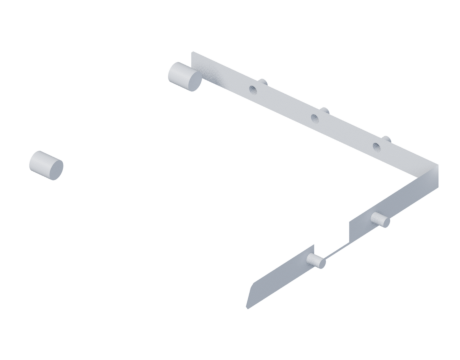
1BASE PANELEtapa —
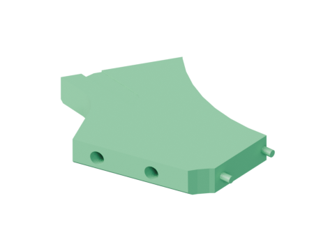
2LEFT MAIN PANELEtapa —
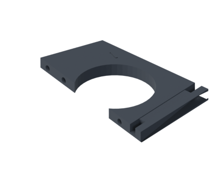
3RIGHT MAIN PANELEtapa —
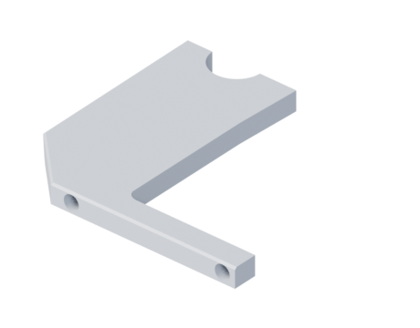
4BUTTON PANELEtapa —
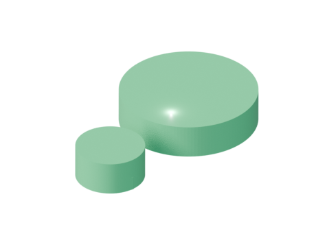
5AUDIO PANELEtapa —
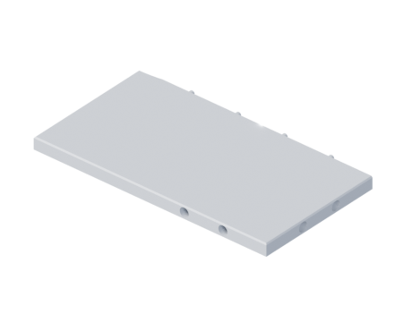
6REAR DOOREtapa —
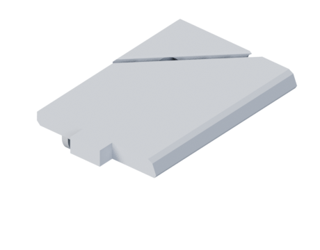
7BUTTON PANEL SUPPORT BAREtapa —
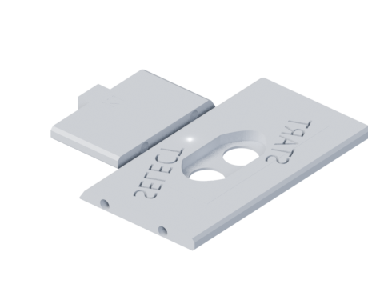
8PAUSE BAREtapa —
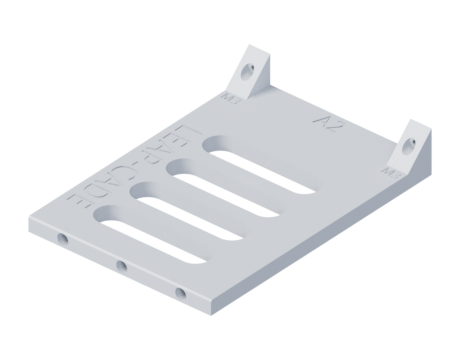
9MONITOR SUPPORT PANELEtapa —
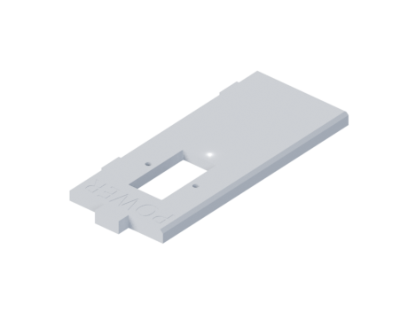
10POWER PANELEtapa —
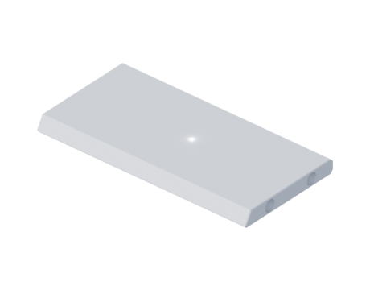
11REAR HANDLE PANELEtapa —
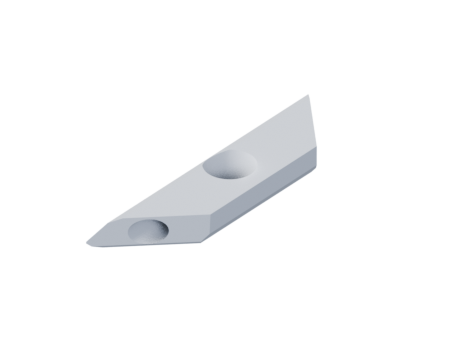
12ABOVE MONITOR PANELEtapa —
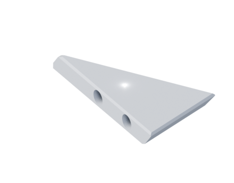
13UNDER MARQUEE PANELEtapa —
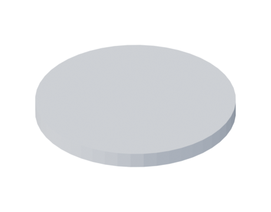
14SIDE PANEL DETAIL CIRCLESEtapa —
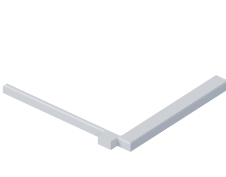
15MONITOR BEZELEtapa —
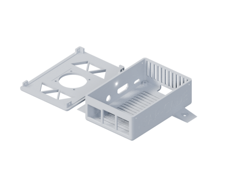
16PI3 MOUNTABLE CASEEtapa —
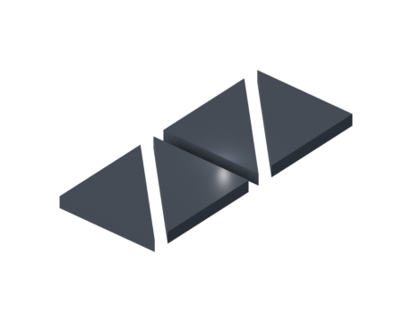
17MARQUEE PANELEtapa —
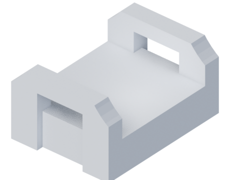
18ADDITIONAL SUPPORTS AND DETAILS - IF NEEDEDEtapa —
O segredo é montar por blocos, não peça por peça: primeiro cada painel grande vira uma peça só (você cola os pedaços cortados), e só depois os painéis se encaixam pra formar a caixa. Antes de passar cola em qualquer junta, encaixe a seco e confira — os furos têm folga de 0,2 mm justamente pra isso.
O modelo é bicolor (verde + preto). Alguns painéis têm placas de duas cores que se sobrepõem. Você não precisa imprimir colorido — mas fica muito mais bonito se imprimir as peças verdes num filamento e as pretas em outro. No controle de impressão dá pra filtrar por cor e imprimir todas de uma cor, trocar o filamento e imprimir as da outra.
O que comprar antes
Colagem das peças
Super Bonder (cianoacrilato) + Ativador
Epóxi (Araldite) para juntas de esforço
Fita crepe + elásticos/grampos
Estrutura
Parafusos para plástico 3×12 e 3×16 mm (~60-80)
Insertos roscados M3 + parafusos (opcional, mais forte)
Furadeira + brocas 2,5 e 3 mm, chave de fenda
Esquadro de 90°
Eletrônica
Raspberry Pi + fonte 5V/3A (o seu, já com RetroPie)
Dica de ouro: teste a eletrônica na bancada (Pi + tela + 1 botão) antes de fechar a caixa. Se algo não ligar, o problema é o componente — não a montagem.
As 8 etapas
1
Etapa 1 — Vire os pedaços em painéis inteiros
Os painéis grandes saíram fatiados pra caber na mesa da Ender 3. Antes de montar qualquer coisa, junte os pedaços de cada painel de volta num só. É um trabalho de bancada, tranquilo, e dá pra fazer enquanto a impressora roda as próximas peças.
Junte na mesa os pedaços de mesmo nome (ex. todos que começam com object_1_id2) — eles formam um painel.
Encaixe os pinos sem cola primeiro. Tem que fechar plano, sem degrau na emenda. Se não fechar, não force: veja se é o pedaço certo.
Fechou bem? Separe, passe cola na emenda e nos pinos, encaixe de novo e prenda com fita até secar.
Quer mais firmeza? Corra um filete de epóxi por dentro, ao longo da emenda.
Super bonder + ativador resolve a maioria. Pra emenda que vai pegar peso, epóxi. Fita crepe pra segurar enquanto cura.
1 BASE PANEL
2 LEFT MAIN PANEL
3 RIGHT MAIN PANEL
4 BUTTON PANEL
5 AUDIO PANEL
6 REAR DOOR
7 BUTTON PANEL SUPPORT BAR
13 UNDER MARQUEE PANEL
17 MARQUEE PANEL
2
Etapa 2 — Levante a caixa
Essa é a etapa que tira a dúvida do "será que fica firme". Quando base + os dois lados + as barras internas fecham, você já tem uma caixa que para em pé sozinha e não balança.
Deite a Base (1) na bancada.
Levante o Lado Esquerdo (2) e o Direito (3) e parafuse na base — com um esquadro garantindo 90°. Torto aqui vira torto no resto todo.
Sempre pré-fure com broca 2,5 mm antes do parafuso, senão o plástico racha.
Encaixe as barras 7 e 9 entre os lados: elas definem a largura certa e travam a caixa.
Se quiser, reforce os cantos com os suportes da peça 18.
~20 parafusos 3×16 mm, parafusadeira, broca 2,5 mm, esquadro. No fim, segure e balance: não pode torcer. Se torcer, reaperte antes de seguir.
1 BASE PANEL
2 LEFT MAIN PANEL
3 RIGHT MAIN PANEL
18 ADDITIONAL SUPPORTS AND DETAILS - IF NEEDED
3
Etapa 3 — Monte o painel de controle
Joysticks e botões dos dois jogadores. Faça isso com a caixa ainda aberta — você vai precisar de espaço pra passar a fiação por baixo.
Prenda a Barra de Suporte (7) na frente, entre os lados: é nela que suas mãos vão descansar.
Encaixe o Painel de Botões (4) na inclinação da frente.
Coloque a Barra de Pausa (8) na borda (botões de pausa/select/moedas).
Instale joysticks e botões, passe a fiação até os encoders USB e teste um por um antes de fechar.
Kit 2 jogadores: 2 joysticks + ~16 botões + 2 encoders USB zero-delay (plug and play no RetroPie).
4 BUTTON PANEL
7 BUTTON PANEL SUPPORT BAR
8 PAUSE BAR
4
Etapa 4 — Instale a tela
A tela e a moldura que a emoldura por fora.
Parafuse a tela no Suporte do Monitor (9), por dentro da caixa.
Encaixe a Moldura (15) por fora — ela esconde a borda da tela.
Monte o Painel Acima do Monitor (12) e o Painel de Áudio (5) com os alto-falantes.
Ligue a tela no Pi (HDMI) e confira a imagem antes de fechar.
Parafusos M3/M4 pra tela, 2 alto-falantes + mini amplificador. Meça o vão da moldura antes de comprar a tela.
9 MONITOR SUPPORT PANEL
15 MONITOR BEZEL
12 ABOVE MONITOR PANEL
5 AUDIO PANEL
5
Etapa 5 — Feche o topo e o marquee
O letreiro de cima — a cara do fliperama.
Monte o Sob-Marquee (13).
Passe a fita LED por dentro e fixe o Marquee (17) na frente dela pra iluminar de fundo.
Se vai gravar o "ARCADE" no marquee, faça isso antes de montar — depois fica difícil.
Fita LED branca + fonte pequena. O marquee translúcido espalha melhor a luz.
13 UNDER MARQUEE PANEL
17 MARQUEE PANEL
6
Etapa 6 — Resolva a traseira
É por trás que você liga tudo e faz manutenção. Olhe a foto da traseira ali em cima.
Painel de Força (10): tomada embutida, chave liga/desliga e a fonte.
Painel de Alça (11): a alça pra carregar o fliperama.
Porta Traseira (6): deixe removível (ímãs ou parafusos) — você vai querer abrir depois.
Tomada de painel, chave, e ímãs de neodímio pra porta (bem mais prático que parafuso).
6 REAR DOOR
10 POWER PANEL
11 REAR HANDLE PANEL
7
Etapa 7 — Ligue a eletrônica
A parte que faz jogar. O seu Raspberry Pi já está pronto com o RetroPie — é só montar e plugar.
Fixe o Case do Raspberry Pi (16) dentro, perto da traseira (fica fácil de acessar as portas).
Ligue os cabos: Pi → tela (HDMI), botões → encoders USB → Pi, som e o LED do marquee.
Energize e chame um jogo pra testar.
Seu RetroPie já roda Marvel vs Capcom e Metal Slug 2. Fonte 5V/3A pro Pi — não economize aqui, fonte fraca trava o sistema.
16 PI3 MOUNTABLE CASE
8
Etapa 8 — Acabamento (opcional)
Só estética — nada aqui muda se o fliperama funciona. Pode deixar pro final ou até pular.
Cole os Círculos Decorativos (14) nas laterais. São 25 peças só de enfeite.
Lixe as emendas, passe massa e primer, e pinte na cor que quiser.
Se curtir, aplique adesivo/arte lateral por cima.
Lixa 220 e 400, massa rápida, primer spray, tinta. Tudo opcional.
14 SIDE PANEL DETAIL CIRCLES
Será que funciona?
A rigidez vem da caixa fechada (base + lados + frente + traseira), não de cada peça — igual a um móvel.
As emendas coladas ficam sanduichadas na estrutura, não aguentam esforço sozinhas.
Se encaixou a seco em cada etapa, vai funcionar colado.
Deixe a elétrica para o fim, mas teste os componentes antes.